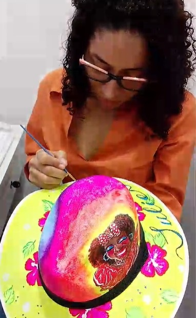
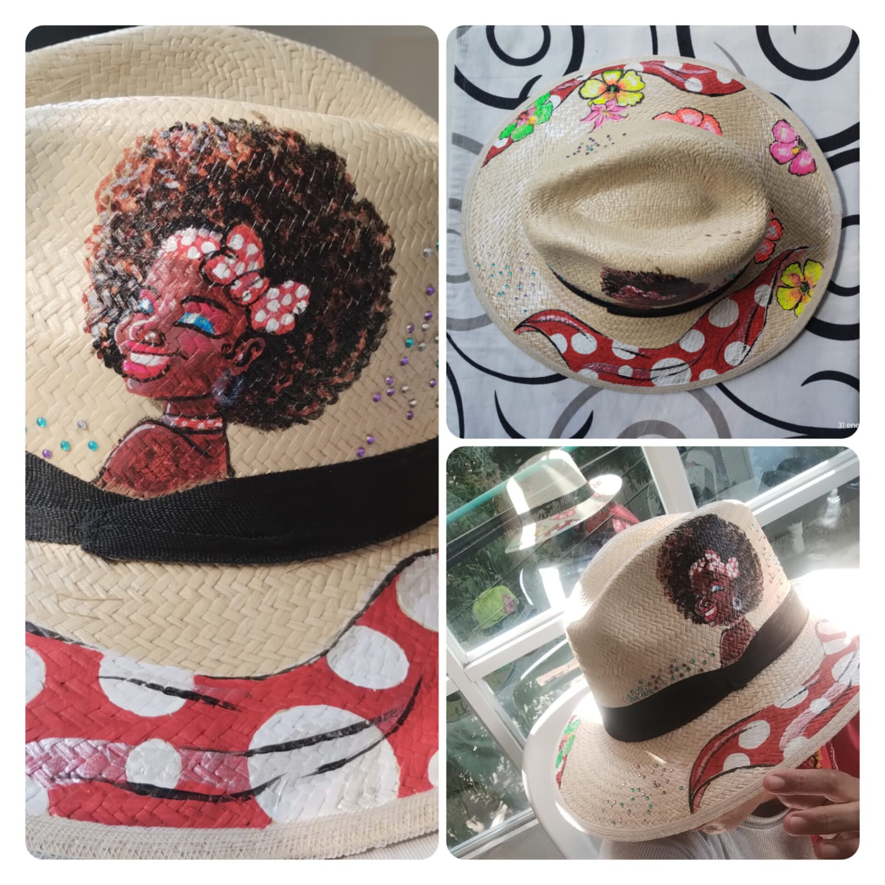

Soy Kelly Montes Buelvas, artista y apasionada por la conservación ambiental. A través de mis obras plasmo cultura, biodiversidad y color sobre sombreros y accesorios en paja natural. Cada pieza cuenta una historia y refleja el amor por nuestras tradiciones caribeñas.
Abanicos de paja natural pintados a mano con imágenes de naturaleza

Transforma sombreros y abanicos en piezas únicas con tu propio diseño o idea especial.